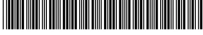
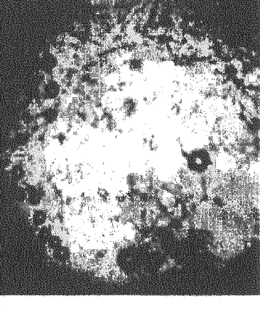
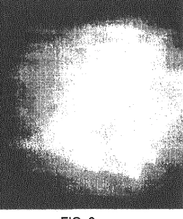

(19)
(11)
EP 3 545 952 A2
(12)
EUROPEAN PATENT APPLICATION(43) Date of publication:
02.10.2019 Bulletin 2019/40
(51) Int Cl.:
A61K 31/10 (2006.01)
A61K 31/04 (2006.01)
(21) Application number: 16886685.3
(86) International application number:
PCT/UA2016/000147
(22) Date of filing: 19.12.2016
(87) International publication number:
WO 2017/127040 (27.07.2017 Gazette 2017/30)
(84) Designated Contracting States:
AL AT BE BG CH CY CZ DE DK EE ES FI FR GBDesignated Extension States:
BA ME
Designated Validation States:
MA MD
(72) Inventors:
(30) Priority: 28.11.2016 UA 201612062
(74) Representative: Best, Michael et al(71) Applicant: IDEPS GmbH
1010 Wien (AT)
(54) METHOD AND "IDEPS" COMPOSITION FOR DESTROYING MICROORGANISMS IN A SESSILE STATE(57) The invention relates to the field of microflora destruction technologies (bacteria, protozoan fungi, etc.), namely microorganisms in sessile state (hereinafter - biofilm), and can be used in medicine, industry, agriculture and various fields of technology for the destruction of biological films which are highly organized communities of bacteria in the extracellular polymeric substance (hereinafter referred to as the exopolymer matrix) formed on surfaces of different origin (biological, industrial, etc.). Pre-prepare the composition for the destruction of microorganisms in sessile state, for which dissolve the oxidizing agent and the substance that blocks the OH - group, in a solvent. An aqueous solution of sodium peroxodisulfate at a concentration of 10.00 wt.% And sodium hydroxide at a concentration of 15.00 wt.% Is used as components from which the composition is prepared for the destruction of microorganisms in the sessile state. Since the pH of the composition is greater than 10.50, no protective reagent is added. After preparation of the composition for the destruction of microorganisms in sessile state, it is introduced into the object, the surface of which contains a biofilm. As a result of the introduction of the claimed composition for the destruction of microorganisms in the sessile state and its exposure for 10 minutes, the quantitative indicator of the enzyme urease of the material from the root canal was 0.00 .kat/l, which indicates that a complete destruction (dissolution) of the
exopolymeric biofilm matrix occurred and bacteria that have passed into the plankton form are completely destroyed by the bactericidal action of the claimed composition.
 FIG. 3
FIG. 3
[0001] The present patent application is a National stage application of PCT application PCT/UA2016/000147 filed on December 19, 2016, which claims priority to Ukrainian patent application UA a201612062 filed November 28, 2016.
[0002] The invention relates to the field of microflora destruction technologies (bacteria, protozoan fungi, etc.), namely microorganisms in sessile state (hereinafter - biofilm), and can be used in medicine, industry, agriculture and various fields of technology for the destruction of biological films which are highly organized communities of bacteria in the extracellular polymeric substance (hereinafter referred to as the exopolymer matrix) formed on surfaces of different origin (biological, industrial, etc.).
[0003] From the current level of technology, which relates to the area under consideration, the closest, by the combination of features, to the claimed invention is a method of killing microorganisms in a sessile state, which involves contact of a biofilm (formed within 24 hours), in an exopolymer matrix of which there are coagulase-negative staphylococci, with an active substance that inhibits the activity of that bacteria, where a low molecular weight cationic peptide - varnerin is used the active substance at a concentration of varnerin of 16 - 128 / ml for 10 of biofilm, with subsequent incubation at 37 ° C for 24 hours, which leads to partial destruction of the exopolymer matrix due to the activation of autolytic systems of bacterial cells affected by varnerin (up to 30% of bacterial cells die in 24 hours) (V.P. Korobov, L. M. Lemkina, L.B. Filatova, TV Polyudova The destruction of biofilms of coagulase-negative staphylococci with cationic peptide varnerin. Proceedings of the Samara Scientific Center of the Russian Academy of Sciences 2011, vol. 13, no. 5 (3), pp. 156 - 159).
[0004] The claimed invention coincides with the known method of destroying microorganisms in the sessile state according to the following essential features: by contacting the microbial biofilm with the active substance.
[0005] However, the known method of killing microorganisms in a sessile state does not provide the technical result of the claimed invention, which is due to the operations performed by the method and the active substance used - varnerin, which is used in the method, and acting directly on microorganisms that, under conditions of biofilm, i.e. in sessile state, are difficult to access for varnerin, since the biofilm itself has a complex composition and is formed (up to 75%) from polysaccharides (cellu-
lose, pectin, curdlan, dextran, levan, etc.), and its composition changes over time, which makes it difficult for the penetration of varnerin into microorganisms, and the destruction of the biofilm itself is secondary, as varnerin does not directly destroy the exopolymer matrix of the biofilm, the destruction of which is due to the activation of autolytic systems of cells attacked by varnerin, and as the result is the efficiency of this method, which does not completely eliminate even the "young" biofilm (24 hours old) and the bacteria in it (up to 70%), when it mainly consists of mono and oligosaccharides, and to a lesser extent polysaccharides, and thus, cannot be used for practical solutions for the destruction of biofilms.
[0006] The problem to which the invention is directed is to improve the known method of destroying microorganisms in the sessile state by replacing the active substance with the one that will ensure the primary destruction of the exopolymeric matrix of the biofilm. It will initially transfer microorganisms from the sessile state to a planktonic form and at the same time affect the microorganisms themselves, which allows for the effective destruction of biofilms of various microbial origin, of different age and without changing the state of the surface on which it is fixed.
[0007] The task is solved in the method of destruction of microorganisms in sessile state, carried out by contact of the exopolymeric matrix of the biofilm with the active substance, so that according to the subject invention, the microorganisms are first transferred to the planktonic state by dissolving the biofilm matrix, and as the active substance they use an oxidant solution and a blocking agent OH - groups. This set of essential features provides a technical result, consisting in the fact that the proposed method primarily provides for the destruction of the exopolymeric matrix of a microbial biofilm, i.e. transfers microorganisms from sessile state to planktonic form, which itself leads to the weakening of microorganisms; and directly affects the microorganisms, regardless of their nature (bacteria, fungi, etc.) and the age of the biofilm.
[0008] From the current level of technology, which belongs to the considered area, the closest, by the combination of features, to the claimed invention, is the composition for the destruction of microorganisms in sessile state, which is an aqueous solution of the active substance, which is used as a low molecular weight cationic peptide - vararin at a concentration of 16 - 128 / ml per 10 of biofilm, and the contact of the solution with the biofilm (formed within 24 hours) is carried out by incubation at 37 ° C for 24 hours that provides partial destruction of the biofilm exopolymeric matrix due to the secondary action of varnerin - activation of autolytic systems of bacterial cells affected by varnerin (up to 30% of bacterial cells die within 24 hours) (V.P. Korobov, L.M. Lemkina, LB .Filatova, TV Polyudova The destruction of biofilms of coagulase-negative staphylococci with cati-
onic peptide varnerin. Proceedings of the Samara Scientific Center of the Russian Academy of Sciences 2011, vol. 13, no. 5 (3), pp. 156-159).
[0009] The claimed invention coincides with the known composition for the destruction of microorganisms in the sessile state, according to the following set of essential features: it contains the active substance and the solvent.
[0010] However, the known composition for the destruction of microorganisms in sessile state does not provide the technical result of the claimed invention, which is due to the components, namely the use of the active ingredient varnerin, which is used in the composition, and acting directly on the microorganisms that, under biofilm conditions, are in the sessile phase, i.e. are difficult to access for varnerin, since the biofilm itself has a complex composition and is formed (up to 75%) from polysaccharides (cellulose, pectin, curdlan, dextran, levan, etc.), and its composition changes over time, which makes it difficult for varnerin to penetrate microorganisms, and the destruction of the biofilm itself is of a secondary nature, since varnerin does not directly destroy the exopolymer matrix of the biofilm, the destruction of which is due to the activation of autolytic systems of cells attacked by varnerin, and as a result, the method has low efficiency. This composition does not completely eliminate even the "young" biofilm (24 hours old) and the bacteria in it (up to 70%), when it mainly consists of mono and oligosaccharides, and to a lesser extent polysaccharides, and cannot be used for practical solutions to the destruction of biofilms for domestic or industrial purposes.
[0011] The problem to which the invention is directed is to improve the known composition for the destruction of microorganisms in the sessile state by changing its qualitative and quantitative composition, which will ensure the primary destruction of the exopolymeric matrix of the biofilm. Primarily, it will ensure the transfer of microorganisms from the sessile state to the planktonic form and simultaneously affect the microorganisms themselves, which allows the effective destruction of biofilms of various microbial origin, of different ages, without changing the state of the surface on which it is fixed.
[0012] The task is solved in the composition for the destruction of microorganisms in sessile state containing the active substance and the solvent with the fact that according to the subject invention, as the active substance an oxidizer solution and a substance that blocks OH - groups are used.
[0013] This set of essential features provides the technical result, consisting in the fact that the proposed composition provides primarily the destruction of the exopolymeric matrix of a microbial biofilm, i.e. transfers microorganisms from sessile state to planktonic form, which itself leads to the weakening of microorganisms; and directly affects the microorganisms, regardless of their nature (bacteria, protozoan fungi, etc.) and the age of the biofilm, which leads to the complete destruction of both the biofilm and the bacteria forming it.
[0014] Additional technical result, which consists in in-
creasing the efficiency of the process of killing microorganisms and expanding the range of chemicals depending on the properties of the surfaces that are processed, is ensured by using sodium peroxydisulfate as an oxidizing agent, and sodium hydroxide as a blocking OH group, and water as a solvent, having in mass. %:
Sodium peroxydisulfate not less than 0.5
Sodium hydroxide not less than 0.5
The remainder being water.
[0015] The proportion of components is due to the following: when going below the lower values of the components, the destruction of the biofilm does not occur, and the choice of the upper limit of the content of the components due to their solubility.
[0016] An additional technical result consisting in increasing the efficiency of the process of destroying microorganisms and expanding the range of chemicals depending on the properties of the surfaces being treated is ensured by using potassium nitrite as an oxidizing agent, and benzyltrimethylammonium hydroxide is used as an OH blocking agent, and water as a solvent, with the following content of the components, mass. %:
Potassium nitrite not less than 0.5
Benzyltrimethylammonium hydroxide not less than 0.5
The remainder being water.
[0017] The proportion of the components is due to the following: when going below the lower values of the components, the destruction of the biofilm does not occur, and the choice of the upper limit of the content of the components due to their solubility.
[0018] Additional technical result, which consists in increasing the efficiency of the process of killing microorganisms and expanding the range of chemical substances depending on the properties of the surfaces that are processed, is ensured by using N-methylmorpholine N-oxide as an oxidizing agent, and potassium tert-butoxide as an OH blocking agent, and dimethyl sulfoxide as a solvent, with the following proportion of the components, mass. %:
N-oxide N-methylmorpholine not less than 0.5
Potassium tert-butylate not less than 0.5
The solvent is the rest.
[0019] The proportion of the components is due to the following: when going below the lower values of the components, the destruction of the biofilm does not occur, and the choice of the upper limit of the content of the components due to their solubility.
[0020] An additional technical result consisting in increasing the efficiency of the process of killing microorganisms and expanding the range of chemicals depending on the properties of the surfaces being treated is en-
sured by using potassium hexacyanoferate as an oxidizing agent, potassium hydroxide as an OH-blocking agent and water as a solvent, with the following components, mass. %:
Potassium hexacyanoferate not less than 0.5
Potassium hydroxide not less than 0.5
The remainder being water.
[0021] The proportion of the components is due to the following: when going below the lower values of the components, the destruction of the biofilm does not occur, and the choice of the upper limit of the content of the components due to their solubility.
[0022] Additional technical result, which consists in increasing the efficiency of the process of destruction of microorganisms and expanding the range of chemical substances depending on the properties of the surfaces that are processed, is ensured by using ammonium cerium (IV) nitrate as an oxidizing agent, formic acid as a blocking OH group, and water as a solvent, with the following proportion of the components, mass. %:
Ammonium cerium (IV) nitrate not less than 0.5
Formic acid not less than 0.5
The remainder being water.
[0023] The proportion of the components is due to the following: when going below the lower values of the components, the destruction of the biofilm does not occur, and the choice of the upper limit of the content of the components due to their solubility.
[0024] An additional technical result consisting in increasing the efficiency of the process of killing microorganisms and expanding the range of chemicals depending on the properties of the surfaces that are processed is ensured by using sodium bromate as an oxidizing agent, sodium hydroxide as an OH blocking substance, and water as a solvent, with the following proportion of the components, mass. %:
Sodium bromate not less than 0.5
Sodium hydroxide not less than 0.5
The remainder being water.
[0025] The proportion of the components due to the following: when going below the lower values of the components, the destruction of the biofilm does not occur, and the choice of the upper limit of the content of the components due to their solubility.
[0026] Additional technical result, which consists in increasing the efficiency of the process of killing microorganisms and expanding the range of chemicals depending on the properties of the surfaces that are processed, is ensured by using sodium dichromate as an oxidizing agent, acetic acid as an OH-blocking agent, and dimethyl sulfoxide as a solvent, with the following components, mass. %:
Sodium dichromate at least 0.5
Acetic acid not less than 0.5
The solvent is the rest.
[0027] The proportion of the components is due to the following: when going below the lower values of the components, the destruction of the biofilm does not occur, and the choice of the upper limit of the content of the components due to their solubility.
[0028] Additional technical result consisting in increasing the efficiency of the process of destruction of microorganisms and expanding the range of chemicals depending on the properties of the surfaces that are processed is ensured by using tetraalkylammonium chloride as an oxidizing agent, methylsulfonic acid as an OH blocking substance, and dimethyl sulfoxide as a solvent, with the following components, mass. %:
Tetraalkylammonium chloride at least 1.0
Methylsulfonic acid at least 0.5
The solvent is the rest.
[0029] The proportion of the components is due to the following: when going below the lower values of the components, the destruction of the biofilm does not occur, and the choice of the upper limit of the content of the components due to their solubility.
[0030] An additional technical result consisting in increasing the efficiency of the process of killing microorganisms and expanding the range of chemicals depending on the properties of the surfaces that are processed is ensured by using dinitrogen tetroxide as the oxidant, Citric acid as an OH blocking substance, and dimethyl sulfoxide as a solvent, with the following components, mass. %:
Dinitrogen tetroxide not less than 0.5
Citric acid not less than 0.5
The solvent is the rest.
[0031] The proportion of the components is due to the following: when going below the lower values of the components, the destruction of the biofilm does not occur, and the choice of the upper limit of the content of the components due to their solubility.
[0032] Additional technical result consisting in increasing the efficiency of the process of killing microorganisms and expanding the range of chemicals depending on the properties of the surfaces that are processed is ensured by the use of diethylamine as an oxidant, sulfur dioxide as a blocking substance, and dimethyl sulfoxide as a solvent, with the following components, mass. %:
Diethylamine not less than 4.5
Sulfur dioxide not less than 1.5
The solvent is the rest.
[0033] The proportion of the components is due to the
following: when going below the lower values of the components, the destruction of the biofilm does not occur, and the choice of the upper limit of the content of the components due to their solubility.
[0034] Additional technical result, consisting in preventing the destruction of the surface on which the biofilm is located, is ensured by the fact that the composition additionally contains a corrosion inhibitor (hereinafter the inhibitor).
[0035] An additional technical result consisting in eliminating the reaction of the oxidizing agent with the reactive hydroxyl groups of the exopolymeric matrix polysaccharides (at a pH of <10.50) is ensured by the fact that the composition additionally contains a reagent that protects hydroxyl groups (hereinafter the protective reagent).
FIG. 1 is a photographic image of a biofilm prior to use of the composition of the invention (magnification 300 times);
FIG. 2 - photographic image of a biofilm in 5 minutes. after using the composition of the invention (an increase of 300 times);
FIG. 3 - photographic image of a biofilm in 10 minutes. after using the composition of the invention (an increase of 300 times);
[0037] The proposed method and composition for the destruction of microorganisms in sessile state is as follows.
[0038] Pre-prepare the composition for the destruction of microorganisms in sessile state, for which dissolve the oxidizing agent and the substance that blocks the OH - group in a solvent which is chosen depending on the chemical nature of the dissolved components of the composition. As an oxidizing agent, any inorganic or organic substance or compound exhibiting oxidative properties is used, and as a substance that blocks OH groups, any inorganic or organic substance or compound is used that enhances the oxidative reactivity (oxidative) ability, which blocks the chemical reactions of the used oxidant with hydroxyl groups of polysaccharides exopolymer matrix, while maintaining the pH level of the composition. The components from which the composition is prepared for the destruction of microorganisms in sessile state, can be used, for example: an aqueous solution of sodium peroxydisulfate in the amount of 0.50-35.70 wt.%, and sodium hydroxide in the amount of 0.50-40.00 wt.%; an aqueous solution of potassium nitrite in the amount of 0.50-75.70 wt.% and benzyltrimethylammonium hydroxide in the amount of 0.50-40.00 wt.%; N-methylmorpholine N-oxide in the amount of 0.50-50.00 wt.% and po-
tassium tert-butoxide in the amount of 0.50-35.00 wt.%. In dimethyl sulfoxide; an aqueous solution of potassium hexacyanoferrate in the amount of 0.50-31.65 wt.% and potassium hydroxide in the amount of 0.50-54.10 wt.%; ammonium cerium (IV) nitrate aqueous solution in the amount of 0.50-58.50 wt.% and formic acid in the amount of 0.50-85.00 wt.%; an aqueous solution of sodium bromate in the amount of 0.50-28.50 wt.% and sodium hydroxide in the amount of 0.50-40.00 wt.%; a solution of sodium dichromate in the amount of 0.50-30.00 wt.% and acetic acid in the amount of 0.50-80.00 wt.% in dimethyl sulfoxide; a solution of tetraalkylammonium chloride in the amount of 1.0-70.00 wt.% and methylsulfonic acid in the amount of 0.50-75.00 wt.% in dimethyl sulfoxide; a solution of dinitrogen tetroxide in the amount of 0.50-35.00 wt.% and citric acid in the amount of 0.50-80.00 wt.% in dimethyl sulfoxide; a solution of diethylamine in the amount of 4.50-45.00 wt.% and sulfur dioxide in the amount of 1.50-25.00 wt.% in dimethyl sulfoxide, as well as other similar systems containing organic and inorganic oxidizers and substances that block - OH group.
[0039] The choice of the quantitative content of the components is due to the following:
The minimum proportion of the components ensure the achievement of the technical result - the destruction of the biofilm matrix and the transfer of microorganisms from the sessile to the plankton form. If the amount is less than the lower value, the destruction of the exopolymer matrix does not occur, i.e. the technical result is not achieved, and the destruction of microorganisms occurs inside the exopolymer matrix, which increases the duration of the process and increases the consumption of the composition. The upper values of the components are due to their solubility limit in the solvent.
[0040] In the case when the composition for the destruction of microorganisms in the sessile state has a pH value of <10.50, then a protective reagent is added to it - a compound to protect the hydroxyl groups of the polysaccharides of the exopolymeric matrix, which can be any of the compounds used for these purposes, : iodomethane, benzyl chloride, allyl bromide, triethylsilane, dimethyl sulfate, benzyl bromide, trichloroacetyl chloride, etc. in an amount of 0.01-5.00 wt.%.
[0041] If the composition for the destruction of microorganisms is also aggressive for the material of the object on which the biofilm is located, for example, metal surfaces, then a corrosion inhibitor is added to the composition, which can be any of the substances used for these purposes, for example: sodium N, N-diethyldithiocarbamic acid, dextrin, 3-methoxy-4-propargyloxy-benzoic aldehyde, sodium sulfur, methyl ethyl ketone, diisopropylammonium nitrite, etc. in an amount of 0.05-5.00 wt.%.
[0042] After preparation of the composition for the destruction of microorganisms in sessile state, it is deposited on the object, the surface of which contains a biofilm.
[0043] As such an object, a plastic tray is used, on which biofilm was previously grown in the period from
January 2016 to September 2016 by continuously supplying water taken from a natural reservoir. During this period, a well-visible layer of an adhesion biofilm formed by bacteria previously found in water is formed on the surface of the tray in contact with the running water: Escherichia coli, Enterococcus faecalis, Enterobacter cloacae.
[0044] The composition for the destruction of microorganisms in sessile state poured into the tray. When using the composition with the content of components corresponding to the lower value of the range, the complete destruction of the exopolymeric matrix of the biofilm occurs within no more than 3 hours, while simultaneously destroying the bacteria, which, as a result of the destruction of the matrix, change from sessile form to planktonic, where the effectiveness of the biocidal properties of the proposed composition is significantly better. The test show that the bacteria Escherichia coli, Enterococcus faecalis, Enterobacter cloacae did not give positive results, indicating their complete destruction.
[0045] The proposed method and composition for the destruction of microorganisms in sessile state is as follows.
[0046] Pre-prepare the composition for the destruction of microorganisms in sessile state, for which dissolve the oxidizing agent and the substance that blocks the OH - group, in a solvent. An aqueous solution of sodium peroxydisulfate at a concentration of 10.00 wt.% and sodium hydroxide at a concentration of 15.00 wt.% is used as components from which the composition is prepared for the destruction of microorganisms in the sessile state. Since the pH of the composition is greater than 10.50, no protective reagent is added.
[0047] After preparation of the composition for the destruction of microorganisms in sessile state, it is deposited onto the object, the surface of which contains a biofilm.
[0048] As a treatment object containing a biofilm, the root canal of the 31st tooth was used in the treatment of chronic periodontitis with a biofilm, which was formed naturally by microorganisms characteristic of dental root canals, such as: Enterococcus faecalis, Candida albicans, Streptococcus oralis, Streptococcus mitis, Escherichia coli.
[0049] As a result of the introduction of the claimed composition for the destruction of microorganisms in the sessile state and its exposure for 10 minutes, the quantitative indicator of the enzyme urease of the material from the root canal was 0.00 , which indicates that a complete destruction (dissolution) of the exopolymeric biofilm matrix occurred and bacteria that have passed into the plankton form are completely destroyed by the bactericidal action of the claimed composition.
[0050] The invention can be implemented in conditions of industrial production and used for domestic, industrial and medical purposes.
1. A method of destroying microorganisms in a sessile state, comprising: contacting a biofilm exopolymer matrix with an active substance, wherein microorganisms are preliminarily transferred to a plankton state by dissolving the biofilm matrix, wherein an oxidizer solution and an OH blocker substance are used as the active substance.
2. A composition for destroying microorganisms in a sessile state, comprising: an active substance and a solvent, wherein a solution of an oxidizing agent and a substance that blocks OH - groups are the active substance.
3. The composition according to claim 2, wherein sodium peroxydisulfate is used as the oxidizing agent, sodium hydroxide is used as the substance blocking OH groups, and water is used as a solvent, at the content of components, wt.%:
sodium peroxydisulfate not less than 0.50
sodium hydroxide not less than 0.50
water is the rest.
4. The composition according to claim 2, wherein potassium nitrite is used as the oxidizing agent, benzyltrimethylammonium hydroxide is used as the substance blocking OH groups, and water is used as a solvent, with a content of components, wt.%:
potassium nitrite at least 0.50
benzyltrimethylammonium hydroxide not less than 0.50
water is the rest.
5. The composition according to claim 2, wherein N-methylmorpholine N-oxide is used as the oxidizing agent, potassium tert-butoxide is used as the substance blocking OH groups, and dimethyl sulfoxide is used as a solvent, wt.%:
N-oxide N-methylmorpholine not less than 0.50
potassium tert-butylate not less than 0.50
dimethyl sulfoxide - the rest.
6. The composition according to claim 2, wherein potassium hexacyanoferrate is used as the oxidizing agent, potassium hydroxide is used as the substance
blocking OH groups, and water is used as a solvent, with a component content, wt.% :
potassium hexacyanoferate not less than 0.50
potassium hydroxide not less than 0.50
water is the rest.
5
7. The composition according to claim 2, wherein ammonium-cerium (IV) nitrate is used as the oxidizing agent; formic acid is used as the substance blocking OH-groups, and water is used as a solvent, with a content of components, wt.% :
ammonium cerium (IV) nitrate not less than 0.50
formic acid not less than 0.50
water is the rest.
10
15
8. The composition according to claim 2, wherein sodium bromate is used as the oxidizing agent, sodium hydroxide is used as the substance blocking OH groups, and sodium hydroxide is used as a solvent, with a content of components, wt.% :
sodium bromate at least 0.50
sodium hydroxide not less than 0.50
water is the rest.
20
25
9. The composition according to claim 2, wherein sodium dichromate is used as the oxidizing agent, acetic acid is used as the substance blocking OH groups, and dimethyl sulfoxide is used as a solvent, with the content of components, wt.% :
sodium dichromate not less than 0.50
acetic acid not less than 0.50
dimethyl sulfoxide is the rest.
30
35
10. The composition according to claim 2 wherein tetraalkylammonium chloride is used as the oxidizing agent, methylsulfonic acid is used as the substance blocking OH groups, and dimethyl sulfoxide is used as a solvent, in wt.%:
tetraalkylammonium chloride not less than 1.00
methylsulfonic acid at least 0.50
dimethyl sulfoxide is the rest.
40
45
10. The composition according to claim 2, wherein as the oxidizing agent, dinitrogen tetroxide is used, citric acid is used as the substance blocking OH groups, and dimethyl sulfoxide is used as a solvent, with a component content, wt.%:
dinitrogen tetroxide not less than 0.50
citric acid not less than 0.50
dimethyl sulfoxide is the rest.
50
55
11. The composition according to claim 2, wherein
diethylamine is used as the oxidizing agent, sulfur dioxide is used as the substance blocking OH groups, and dimethyl sulfoxide is used as a solvent, with a content of components, wt.%:
diethylamine not less than 4.50
sulfur dioxide not less than 1.50
dimethyl sulfoxide is the rest.
12. The composition according to claim 2, further comprising a corrosion inhibitor.
13. The composition according to claim 2, further comprising a reagent that protects the OH-groups of polysaccharides of an exopolymeric matrix.

FIG. 1
FIG. 2
FIG. 3
REFERENCES CITED IN THE DESCRIPTIONThis list of references cited by the applicant is for the reader's convenience only. It does not form part of the European patent document. Even though great care has been taken in compiling the references, errors or omissions cannot be excluded and the EPO disclaims all liability in this regard.
Patent documents cited in the description